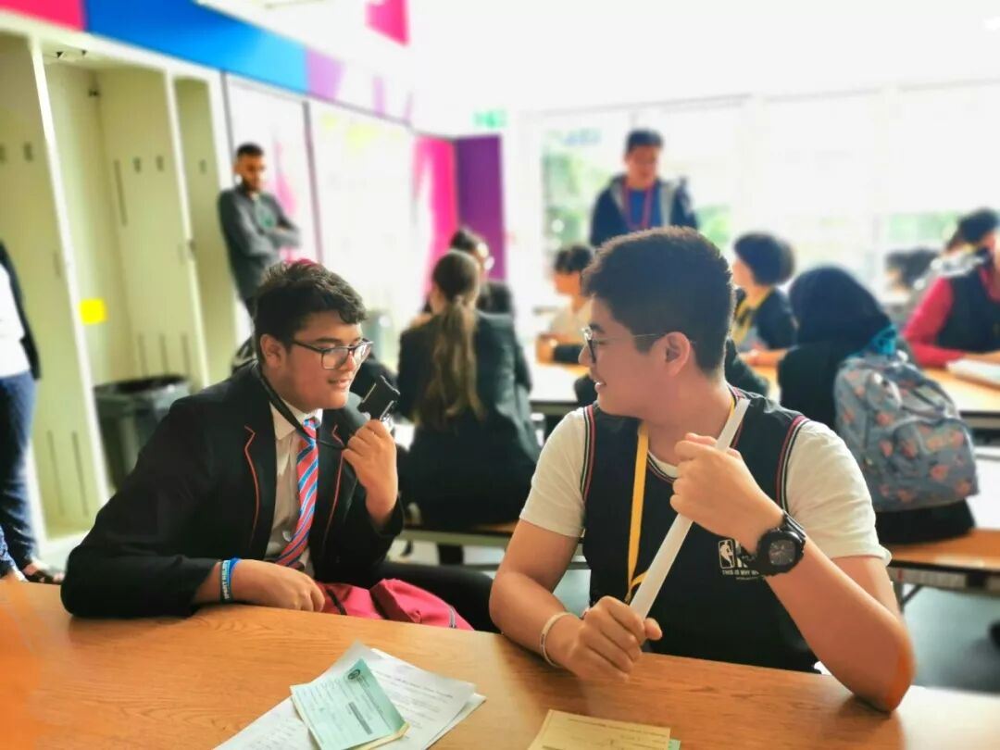
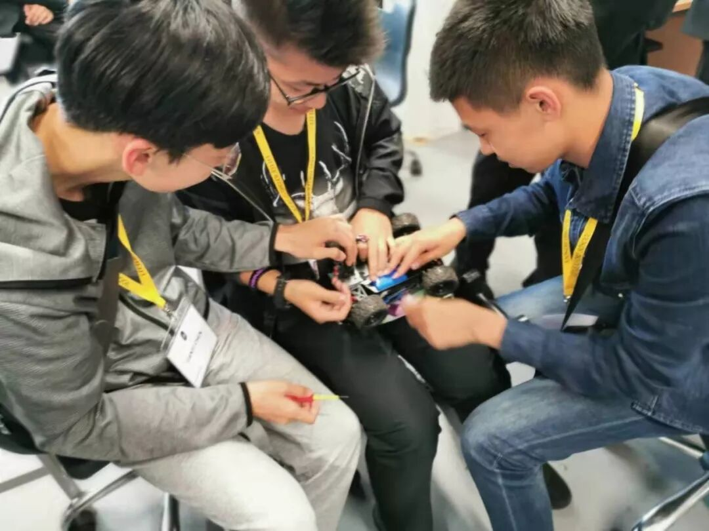
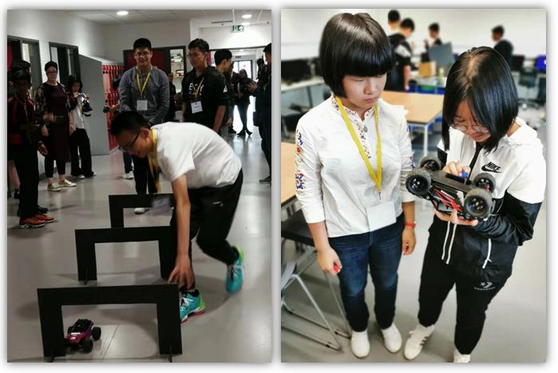
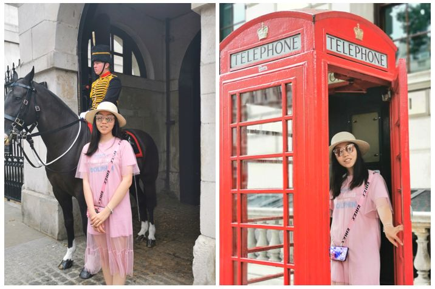
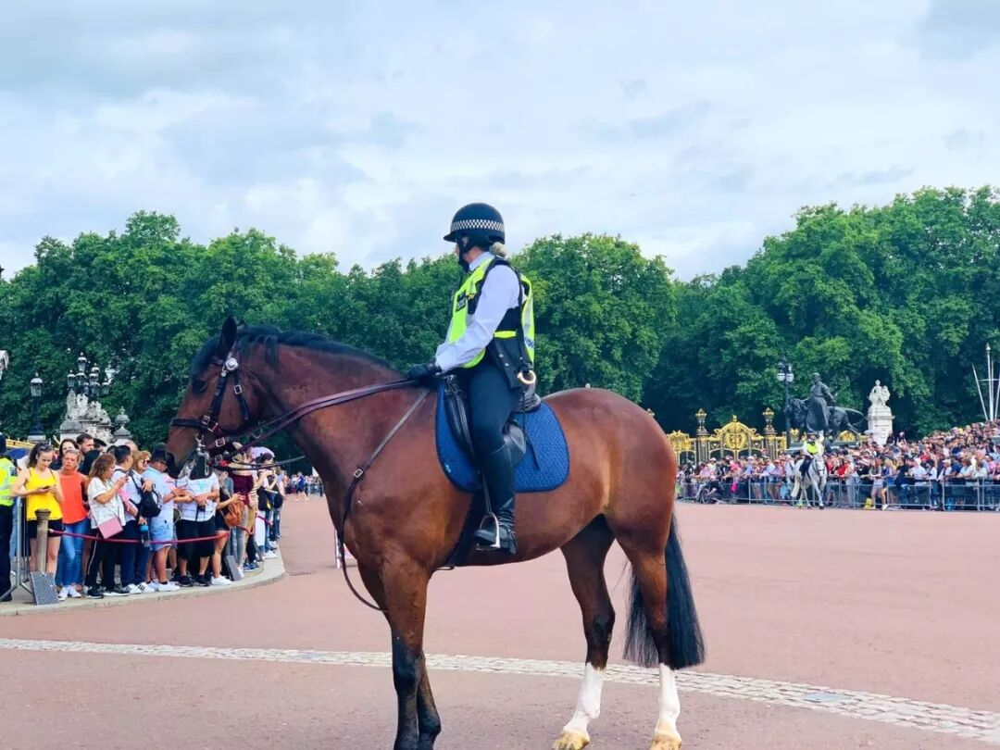
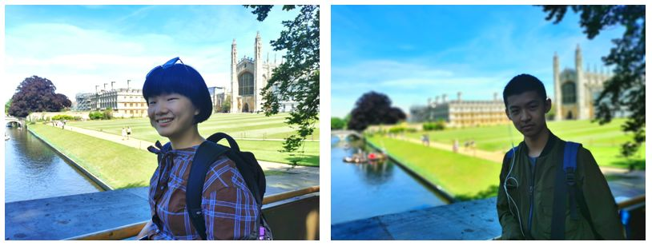
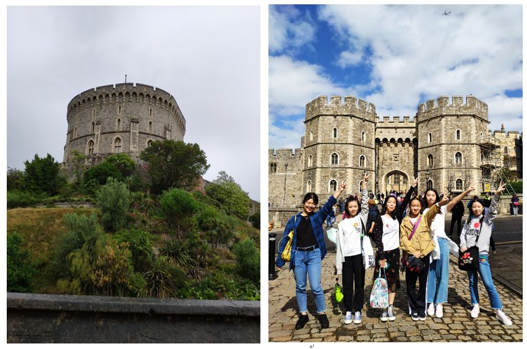
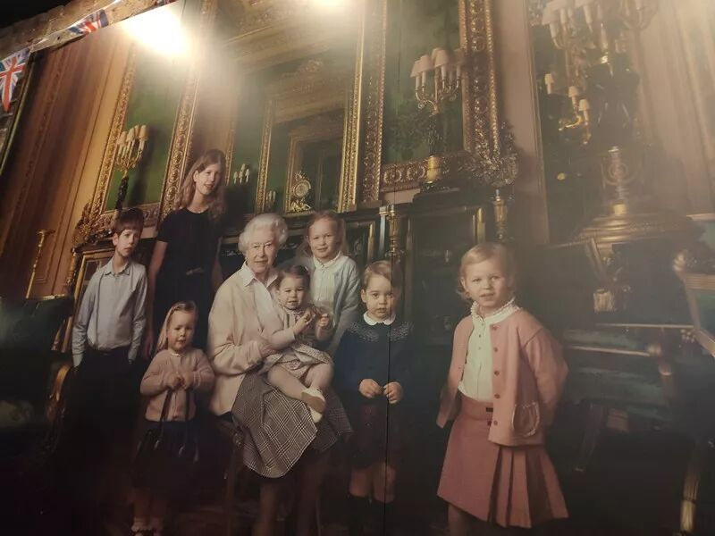
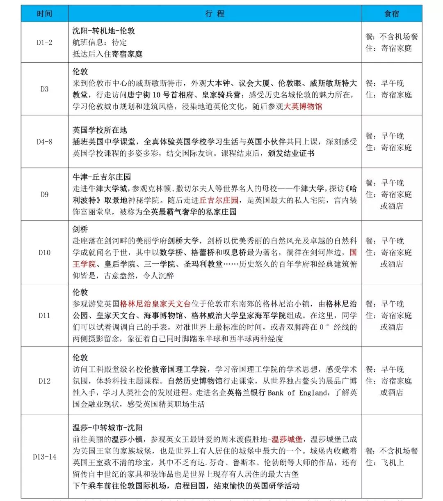

Liaoning Overseas Study Service Co., Ltd. Liaoning Overseas Study ● The preferred brand for international study tours. Comprehensive services for international education and study tours. There are many growth models, such as 'Letting Go of the Young Eagle'—sending children on an independent journey to explore the world independently, gaining growth through study tours...
Liaoning Overseas Study Service Co., Ltd. Liaoning Overseas Study ● The preferred brand for international study tours
Comprehensive international education & international study tour services

There are many ways to grow. For example, "Let Go of the Young Eagle," sending children on an independent journey to explore the world alone. Growth is gained through study tours. In the winter of 2020, Liaoning Overseas Study invites you to join us on a study tour 👣 for growth. First stop: British School

Let's step into the UK together, explore the aristocratic spirit that runs through British education, and enhance our understanding of elite education. Let us follow in their footsteps and explore the history, development, and present of aristocratic culture.
Experience the British aristocratic course
A nation's temperament and honor are often closely tied to its spirit. If British civilization is the crown of world civilization, then the aristocratic spirit is the brightest jewel on the crown. The British aristocratic spirit centers on honor, responsibility, courage, and self-discipline, supported by cultural upbringing, social responsibility, and a free spirit, symbolizing Britain's noble moral character and cultural cultivation.
British culture classes are fully immersed in British aristocratic temperament
"British schools generally do not have dedicated moral education classes, but during classes, teachers constantly remind us of what love and character are. Every day, we are arranged to have extensive discussions, express our own insights, and grasp what is right and wrong and develop critical thinking. Group activities outside the classroom, in my view, are also an important way to cultivate empathy and responsibility. We come to the sports field, the laboratory, and public welfare organizations, cultivating our love and social skills through interaction. ”

▲ Mutual aid classroom




Second stop: London
Someone once said: if someone is tired of London, then he is tired of life too. Because London can meet almost any of your needs...
Head to the city of Westminster in central London, where Big Ben, the Houses of Parliament, the London Eye, and Westminster Abbey are worth visiting. Visit 10 Downing Street, the Prime Minister's House, the Royal Horse Barracks, the British Museum, and the Natural History Museum; Experience the charm of historic London, learn about London's urban planning and architectural style, and immerse yourself in authentic British culture.





Third stop: Cambridge
Xu Zhimo's poem "Farewell to Cambridge Again" showcased the tranquility and softness of this small town to the world, but it is best known for the top university, Cambridge University.


The entire city is centered around the 31 colleges of Cambridge University, complemented by timely gardens, museums, churches, and small bridges over flowing water, with historic historic buildings everywhere, full of antique charm. For centuries, generations of students have pursued their dreams here, filling the town with an academic atmosphere.
Fourth stop: Oxford
Both towns that rose to fame because of their top universities—Cambridge is called the 'University of the City,' while Oxford is the 'City of the University.' Compared to Cambridge's brightness and modernity, Oxford has preserved the charm of ancient British architecture more completely, with the entire town made up of more than 30 colleges scattered throughout the city.


Step into Churchill Manor, the largest private residence in the UK, lavishly decorated inside the palace, known as the most imposing and luxurious private estate in the UK. Fifth stop: Windsor
The Queen's favorite weekend getaway is Windsor Castle. Windsor Castle has become the royal family castle and is the largest inhabited castle in the world. Inside the castle is the British royal family's treasures, including works by masters such as Da Vinci, Roosborne, and Rembrandt, as well as furniture and decorations dating back to the Middle Ages. It is the largest inhabited castle in the world





Detailed itinerary display

The above itinerary is for reference only. The organizer reserves the final right of interpretation and reserves the right to adjust the itinerary order and schedule accordingly based on actual circumstances, emergencies, or force majeure, without reducing the number of attractions. The final tour notice for UK schools shall prevail.
Let your dreams soar, and create the future
Registration Instructions Duration: 14 days Suitable age: 12-18 years Departure date: Late January or early February 2020 Tour cost: 33,800 RMB
Fees include: round-trip airfare from Shenyang, domestic transportation in the UK, university visits and tourist attractions, meals (except meals), accommodation and transportation, school management fees, and personal accident insurance.
Once the total fees for the above projects are paid, they are non-refundable. (However, if your visa is refused, the full project fee will be refunded, and the 1400 yuan visa fee will be collected at your own expense). Additional gift: A beautiful commemorative photo album.
Fees do not include: passport, visa fee, airport meals, and luggage check-in fees within the UK (if applicable), travel medical insurance (recommended to purchase on your own), medical check-up (optional), and other personal expenses. More itineraries will be available soon... There's always something for you. 2020 Winter Study Tour - USA Edition 33,800 RMB
2020 Winter Study Tour - Australia Station 33,800 RMB 2020 Winter Study Tour - UK Station 33,800 RMB 2020 USA Exchange Program 16,000 RMB 2020 Australian Government Exchange Program 16,000 RMB Registration Method
1. Phone registration

2. WeChat registration


Follow us on WeChat to start your study tour *The final interpretation rights of this event belong to Liaoning Overseas Study. Liaoning Overseas Study A third educational force beyond family and school education
Sponsor Introduction: Established in 1996, dedicated to international education for 23 years; Professional institution for international education exchange by the Liaoning Provincial Department of Education; One of the first institutions to obtain the Ministry of Education's self-funded overseas study qualification; Executive director unit of the Ministry of Education Education Development Strategy Association. Focused on studying abroad, research and exploration, education...
Liaoning Study Abroad Service Co., Ltd 辽宁留学 ● 国际研学首选品牌
国际教育 & 国际研学综合服务
成长的模式有很多 比如说 “放手雏鹰” 送孩子一场独自闯荡世界的独立之旅 以研学的方式收获成长 2020年的冬天 辽宁留学 邀你一起 来一场成长的研学之行 👣 第一站：英国学校 School
一起走进英国， 去探寻英国教育中贯穿始终的贵族精神涵养，提升对精英教育的理解能力 。让我们跟随他们的脚步，一起去探索贵族文化的历史、发展和当下。
体验英式贵族课程
一个国家的气质和荣誉，往往与这个国家的精神密切相关。如果说英国文明是世界文明历史上的一顶王冠， 那么贵族精神就是王冠上最璀璨的明珠。 英国贵族精神以荣誉、责任、勇气、自律为核心，以文化教养、社会担当、自由灵魂为支撑，象征着英国高贵的道德情操和文化修为。
英式文化课堂 全方位浸染英伦贵族气质
“ 英国的学校一般不会设置专门的道德教育课，但是在学校上课时，老师们会时时刻刻提醒我们，什么是爱与品格。每天的课堂活动，我们被安排大量的课堂讨论，抒发自己的见解，自己去领悟什么是是非对错，并形成批判思维。课堂之外的集体活动，在我看来也是一种重要的培养同理心和责任心的方式，我们来到运动场，来到实验室，来到公益组织，在互动中培养着自己的爱心和社交能力。 ”
▲互助课堂
第二站：伦敦 London
有人说过:如果谁厌倦了伦敦，那么他也厌倦了生活。 因为伦敦， 几乎可以满足你的任何需求...
来到伦敦市中心的威斯敏斯特市，大本钟、议会大厦、伦敦眼、威斯敏斯特大教堂，行走访问唐宁街10号首相府、皇家骑兵营、 大英博物馆 、自然历史博物馆；感受历史名城伦敦的魅力所在，学习伦敦城市规划和建筑风格，浸染地道英伦文化。
第三站：剑桥 Cambridge
徐志摩一首《再别康桥》，把这座小镇的静谧和柔美展现给世人，但这座小镇最为人知的便是顶尖学府剑桥大学。
整座城以剑桥大学的31个学院为主体，搭配上恰合时宜的花园、博物馆、教堂和小桥流水，历史悠久的古老建筑俯仰皆是，古意盎然。 几个世纪以来，一代代学生在这里追求着自己的梦想，令这座小镇处处弥漫着学术的氛围。
第四站： 牛津 Oxford
同样是因为顶尖大学而名声鹊起的两座小镇，剑桥被称为「城市中的大学」，而牛津则是「大学中的城市」。相比剑桥的明快、现代化，牛津更完整地保留了英国古建筑的韵味，整个小镇就是被散落在各处的30多个学院组成。
走进 丘吉尔庄园 ，是英国最大的私人宅院，宫内装饰富丽堂皇，被称为 全英最霸气奢华的私家庄园. 第五站：温莎 Windsor
英女王最钟爱的周末渡假胜地- 温莎城堡 ，温莎城堡已成为英国王室的家族城堡，也是世界上有人居住的城堡中最大的一个。城堡内收藏着英国王室数不清的珍宝，其中不乏有达.芬奇、鲁斯本、伦勃朗等大师的作品，还有留传自中世纪的家具和装饰品也是世界上现存有人居住的最大古堡
具体行程展示
上行程仅为参考行程，主办方对上述内容有最终解释权，并有权在不减少景点数目的前提下，根据实际情况、突发事件或不可抗力等因素对行程顺序及时间安排进行适当调整，关于到英国学校最终以出团通知为准。
放飞梦想，成就未来
报名须知 行程天数： 14天 适合年龄： 12岁-18岁 出发时间： 2020年1月末或2月初 行程费用： 33800元
费用包含： 沈阳起止往返机票，英国国内交通，大学参观及名胜游览，三餐（不含餐情况除外）、住、接送上下学交通，学校管理费，人身意外保险。
上述项目总费用一经缴纳，不能退还。（但若被拒签，将全额退还项目费，代收1400元签证费自理）。 额外赠送： 精美纪念影集一本。
费用不含： 护照、签证费、机场餐和英国境内行李托运费（如果有）、出行医疗保险（建议自行购买）、体检（自愿）、其他个人消费。 更多行程敬请期待... 总有一款适合你 2020冬季研学活动-美国站 33800元
2020冬季研学活动-澳大利亚站 33800元 2020冬季研学活动-英国站 33800元 2020美国交换生项目 16000元 2020澳大利亚政府交换生项目 16000元 报名方式
1. 电话报名
2.微信报名
关注微信 开启游学之旅 *本次活动最终解释权归辽宁留学所有 辽宁留学 家庭、学校教育外的第三种教育力量
主办机构简介： 1996年成立，专注国际教育23年；辽宁省教育厅从事教育国际交流的专业机构；首批取得国家教育部自费出国留学资质的机构；教育部教育发展战略协会常务理事单位。 专注留学、专注研学、专注教育...
English edition. Select 中文原文 to compare with the original Chinese article.
This article is edited and published by Liaoning Overseas Study Service Co., Ltd. The content is for study abroad planning reference only. Unauthorized reproduction is prohibited.
Information on policies, regulations, admissions brochures, and program fees is timely. Please refer to the latest releases from official institutions and institutions in various countries; For detailed verification, please Contact an advisor。